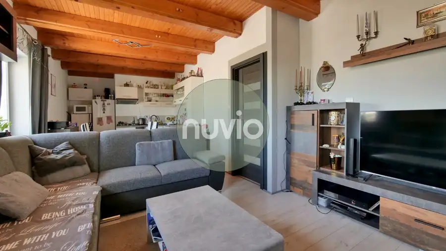
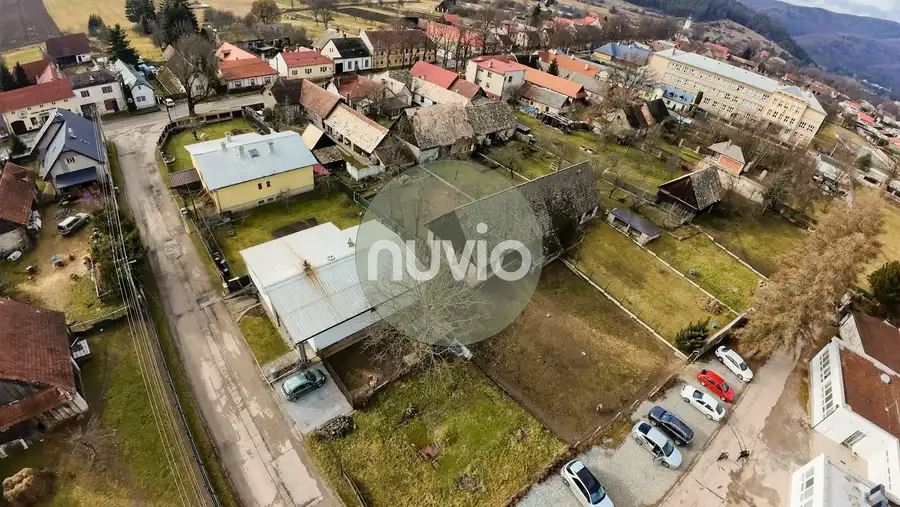
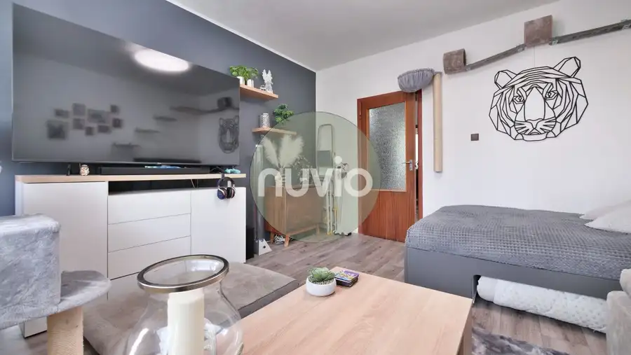

Tradičná drevenica s potenciálom v Žabokrekoch
Žabokreky
- Dispozícia2-izbový
- Plocha65 m²
- Poschodie0. z 1
- Stavčiastočne prerobený
O nehnuteľnosti
Objavte čaro tradičného bývania v srdci obce Žabokreky.
Ponúkame na predaj samostatne stojaci rodinný dom – drevenicu s historickým nádychom, ktorá prešla čiastočnou rekonštrukciou. Interiér domu si zachováva autentický rustikálny šarm, ktorý podčiarkujú priznané stropné trámy a drevené prvky. Súčasťou domu je moderne zrekonštruovaná kúpeľňa vybavená sprchovým kútom s hydromasážnymi tryskami a praktickým kúpeľňovým nábytkom v dekore dreva. Obývacia časť je zútulnená krbovými kachľami, ktoré dodávajú priestoru teplo domova, zatiaľ čo kuchyňa je vybavená kuchynskou linkou so spotrebičmi vrátane umývačky riadu a nerezovej chladničky.
Nehnuteľnosť s úžitkovou plochou 65 m² disponuje dvoma izbami, ktoré ponúkajú príjemnú svetelnosť vďaka tradičným oknám. Dom je napojený na všetky inžinierske siete – vodu, kanalizáciu a elektrinu. V obci je dostupný plyn. K domu prislúcha priestranný pozemok s rozlohou 480 m², na ktorom sa nachádza aj murovaná hospodárska budova. Táto stavba predstavuje vynikajúci potenciál pre ďalší rozvoj – či už ako dielňa, letná kuchyňa, alebo po rekonštrukcii ako samostatný rodinný dom.
Lokalita Žabokreky v okrese Martin je vyhľadávaná najmä pre svoju výbornú dostupnosť a blízkosť prírody. Obec ponúka kompletnú občiansku vybavenosť vrátane školy, škôlky, pošty, reštaurácie a aktívny kultúrny život s podujatiami pre všetky generácie. Všetky dôležité služby, ako napríklad obchod, sú dostupné v pešej vzdialenosti do 350 metrov, zastávka MHD je vzdialená približne 100 metrov.
Táto nehnuteľnosť je ideálnou voľbou pre klientov, ktorí hľadajú pokojné bývanie s možnosťou realizácie vlastných predstáv o rekonštrukcii hospodárskej budovy. Ak hľadáte dom s dušou a potenciálom v príjemnej lokalite, táto ponuka je určená práve vám. Radi vás privítame na osobnej obhliadke, kde si môžete naplno vychutnať atmosféru tohto miesta.
Zaujala vás táto nehnuteľnosť alebo potrebujete viac informácií?
Neváhajte ma kontaktovať na tel. č. . Rád vám poskytnem kompletné informácie a dohodneme si termín obhliadky.
Roman Kulich – váš realitný maklér
nuvio– kompletné realitné služby
Aj váš dom, byt alebo pozemok predáme rýchlo a profesionálne. Kontaktujte ma ešte dnes.
Parametre
| Rozloha pozemku | 480 m² |
|---|---|
| Zastavaná plocha | 72 m² |
| Úžitková plocha | 65 m² |
| Poschodie | prízemie |
| Počet poschodí | 1 |
| Počet izieb | 2 |
| Stav | čiastočne prerobený |
| Odvoz odpadu | áno |
| Voda | verejný vodovod |
| El. napätie | 230V |
| Plyn | áno |
| Kanalizácia | áno |
| Internet | optika |
| Kúpeľňa | sprchovací kút |
| Vykurovanie | vlastné - pevné palivo |
| Parkovanie | áno |
| Inžinierske siete | áno |
| Postavené z | drevostavba |
| Energetický certifikát | nie |
| Okná | drevené |
| Terén | rovina |
| Dátum zverejnenia | 31. 8. 2026 |
Kde to je
Mohlo by Vás zaujímať

Rodinné domy10 199 000 €Praktický 8-izbový rodinný dom na Bystričke Bystrička 8-izbový150 m² Predstavujeme Vám jedinečnú príležitosť stať sa majiteľom priestranného 8-izbového rodinného domu v malebnej a tichej lokalite Bystričky, v okrese…
Pozemok5 56 900 €Pozemok vhodný na výstavbu rodinného domu. Kláštor pod Znievom, 718 m2 Kláštor pod Znievom 718 m² Lokalita: Kláštor pod Znievom, pri zdravotnom stredisku Veľkosť pozemku: 718 m2 Popis pozemku: - Na pozemku sa nachádza stodola vhodná na kompletnú…
Byt8 119 000 €Dvojizbový byt s plochou 51 m² v mestskej časti Martin - Záturčie Martin 2-izbový51 m²1. podlažie Ponúkame na predaj útulný dvojizbový byt s úžitkovou plochou 51 m², ktorý sa nachádza na vyhľadávanej adrese v mestskej časti Martin - Záturčie. Byt…